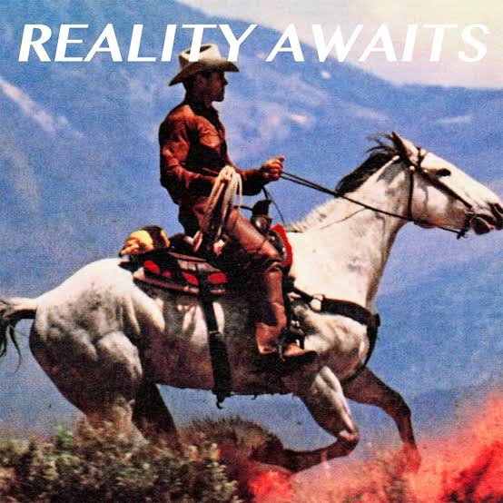

Fred again.. & Brian Eno
Dos generaciones de música electrónica se encuentran en la intimidad suspendida de Secret Life.
Ver en el archivo →Tres artistas, tres maneras de transformar el sonido. Una selección nueva cada mes.
Dos generaciones de música electrónica se encuentran en la intimidad suspendida de Secret Life.
Ver en el archivo →
Titanic Rising convierte la ansiedad contemporánea en canciones amplias, cinematográficas y profundamente humanas.
Ver en el archivo →
Reality Awaits abre un nuevo capítulo: nueve canciones que vuelven a tensionar la identidad de la banda.
Ver en el archivo →